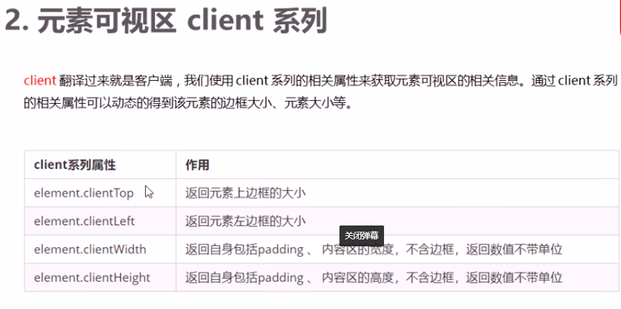
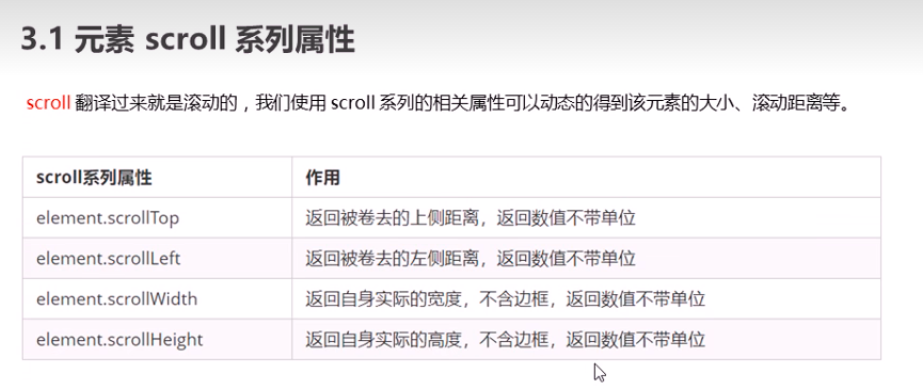

包含padding

元素偏移量clinet系列/scroll系列,元素偏移量clinet系列/scroll系列,元素偏移量clinet系列/scroll系列,元素偏移量clinet系列/scroll系列,元素偏移量clinet系列/scroll系列,
元素偏移量clinet系列/scroll系列,元素偏移量clinet系列/scroll系列,元素偏移量clinet系列/scroll系列,元素偏移量clinet系列/scroll系列,
元素偏移量clinet系列/scroll系列,元素偏移量clinet系列/scroll系列,元素偏移量clinet系列/scroll系列,元素偏移量clinet系列/scroll系列,